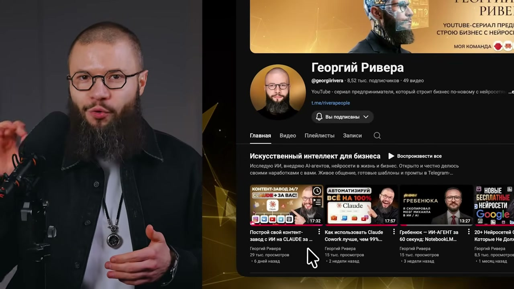
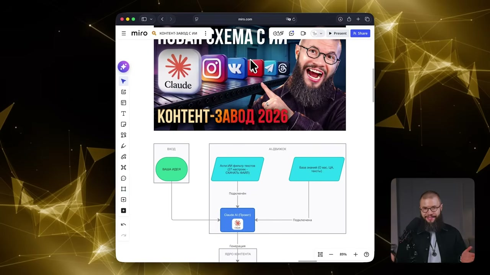
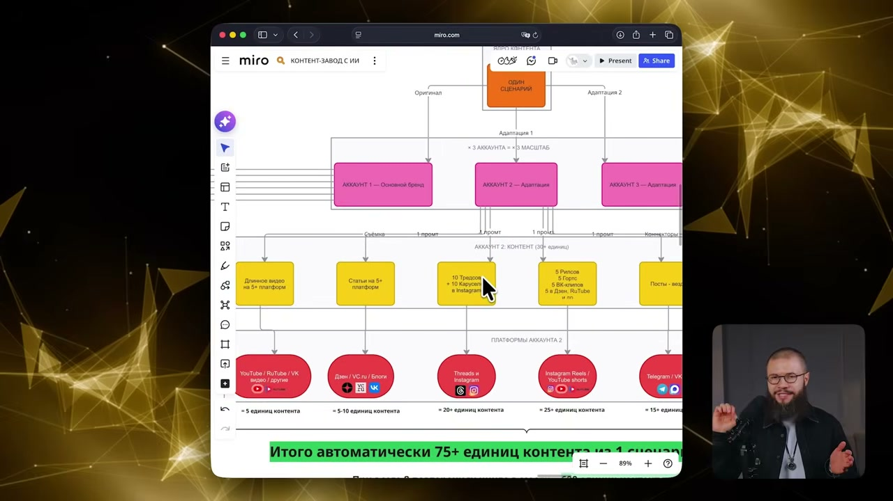
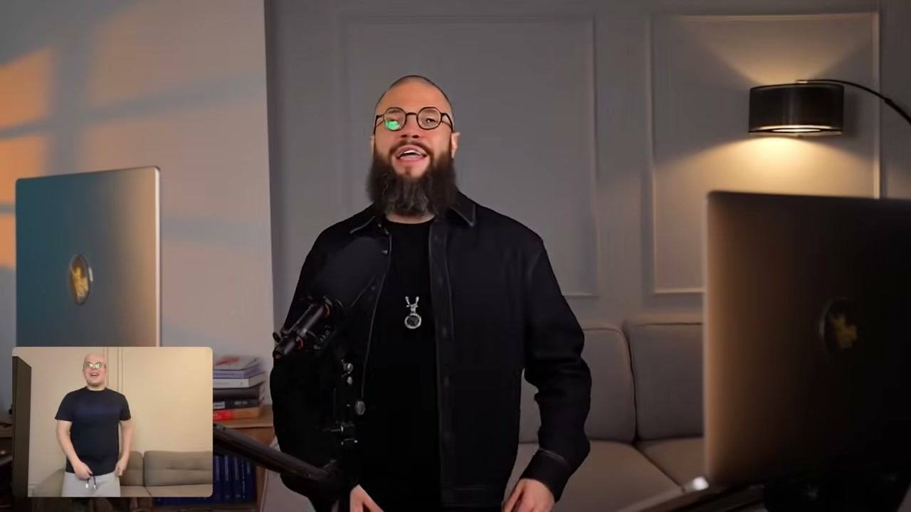
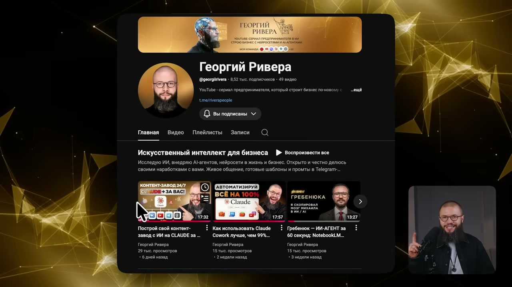

Я построил ИИ-завод для Instagram: карусели с Claude за 5 минут
Георгий Ривера · YouTube · 11 апреля 2026 · весь ролик 19:02 · 46 тыс. просмотров
Разбирается только интро — первый блок, где автор не объясняет тему, а продаёт досмотр.
Граница интро: 0:00–2:07. На 2:05 звучит «Начинаем практику», на 2:08 — «Итак, что нам
понадобится сегодня?». Дальше речь переходит из будущего времени («покажу», «объясню») в настоящее
(«открываем обычный чат в Клоде, вставляем промт»). Монтаж после границы плотнее: 11 склеек за первые
127 секунд против 10 за следующие 60.
2:07длина интро. Типичное — 60–90 секунд, это вдвое длиннее
11склеек за интро
10,6 ссредний план. Монтаж редкий, почти статичный
122слов в минуту. Норма разговорной русской речи ~130 — говорит размеренно
249слов сказано всего
10законченных мыслей
12сцен на экране
Пост
Почему я делаю карусели, а не рилсы
В прошлом выпуске я показал контент-завод: несколько промтов — и нейросеть Claude сама
превращает один сценарий длинного видео в рилсы, статьи для Дзена и посты для Telegram,
ВКонтакте и ещё десятка соцсетей. Сегодня следующий уровень — необычный способ делать
виральные карусели для Instagram.
Именно карусели, и вот почему. Рилсы — это развлечение. Люди приходят туда отдохнуть,
полистать ленту, посмеяться. Карусели — другая история: там подаётся интеллектуальный
контент, и этот формат притягивает платёжеспособную аудиторию.
Плюс цифры. Карусели в Instagram дают вовлечённость выше на 30%, один такой пост получает
в три раза больше охватов, чем обычная публикация. А если добавить трендовую музыку, пост
попадёт ещё и в музыкальную ленту — выгода двойная.
Так что если ваша задача не танцы снимать, а продавать свои услуги, продвигать бизнес
или блог — этот выпуск точно для вас.
Это второе видео сериала, где мы вместе строим контент-завод на нейросетях. Первый выпуск
уже набрал 30 000 просмотров и помог многим сэкономить время и деньги на контенте. Уверен,
что этот продвинет ваши дела ещё выше, а следующий — ещё выше. Лично я буду для этого
очень стараться.
Поэтому ставьте лайк авансом. Если видео не понравится — заберёте свой лайк обратно.
Цепочка ходов
Отсылка к прошлому выпуску→Обещание результата→Противопоставление форматов→Аргумент про платёжеспособную аудиторию→Цифры-доказательство→Бонусный приём сверху→Фильтр аудитории→Авторитет цифрой→Анонс серии→Просьба о лайке с шуткой
Разбор по мыслям
Отсылка к прошлому выпуску116 слов/мин
«В прошлом видео я показал, как построить контент-завод. Всего несколько
промтов — и у вас сценарий для длинного видео, из которого Клод сам делает рилсы, статьи
для Дзена, посты в Telegram, ВКонтакте и ещё 10 других социальных сетей».



Обещание результата109 слов/мин · тормозит
«Сегодня следующий уровень. Я покажу вам совершенно необычный способ
создания виральных каруселей для Instagram».
Противопоставление форматов115 слов/мин
«Именно каруселей. И сейчас объясню, почему. Смотрите, что происходит.
Рилсы — это развлекательный контент. Люди туда приходят отдохнуть, полистать ленту,
посмеяться».
Аргумент про платёжеспособную аудиторию128 слов/мин
«Но карусели — это уже совершенно другая история. В каруселях подаётся то,
что я бы назвал интеллектуальный контент. И именно этот формат притягивает платёжеспособную
аудиторию».
Цифры-доказательство136 слов/мин · разгон
«Карусели в Инстаграме сейчас дают, к тому же, вовлечённость выше на 30%.
То есть один пост получает в три раза больше охватов, чем обычная публикация».
Бонусный приём сверху142 слов/мин · разгон
«А если вы добавите к своей карусели ещё и какую-нибудь трендовую музыку,
то ваш пост попадёт в ленту. То есть от такого продвижения может быть двойная выгода».
Фильтр аудитории124 слов/мин
«Поэтому, если ваша задача не просто танцы снимать, а делать продажи ваших
услуг, для вашего бизнеса, для вашего блога, то этот выпуск он точно для вас».

Авторитет цифрой120 слов/мин
«И это второе видео из сериала, где мы вместе строим контент-завод с
нейросетями. Первый выпуск он уже набрал 30 000 просмотров и помог уже очень многим
сэкономить время, деньги на создание контента».

Анонс серии118 слов/мин
«Я уверен, что этот выпуск он тоже продвинет ваши успехи в ваших делах ещё
выше, а следующий выпуск — ещё выше. Лично я буду для этого очень стараться».
Просьба о лайке с шуткой130 слов/мин
«Поэтому ставьте лайк авансом, и если видео вам не понравится, то заберёте
свой лайк обратно. Начинаем практику».